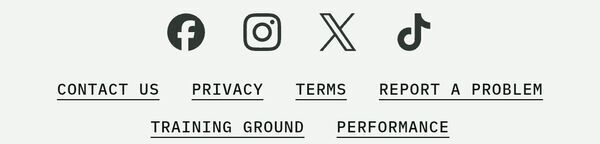
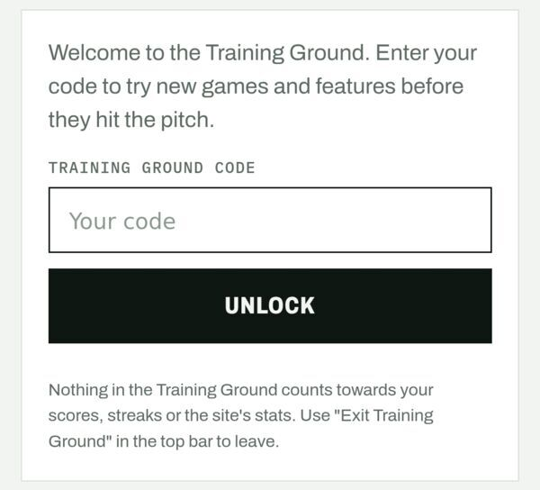
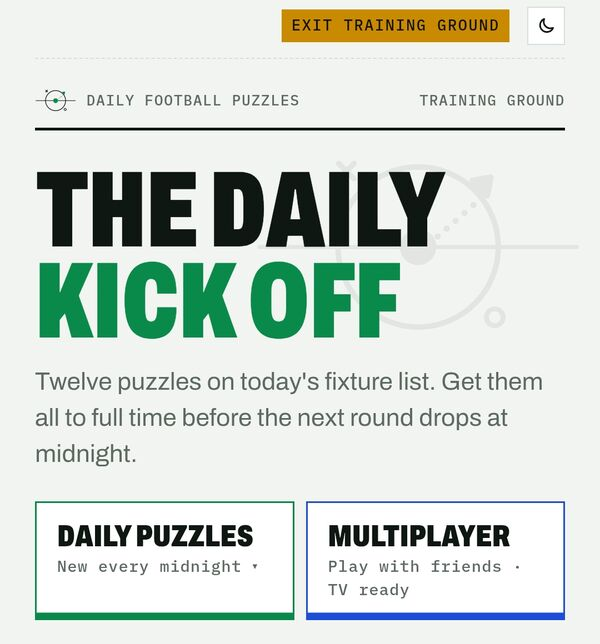
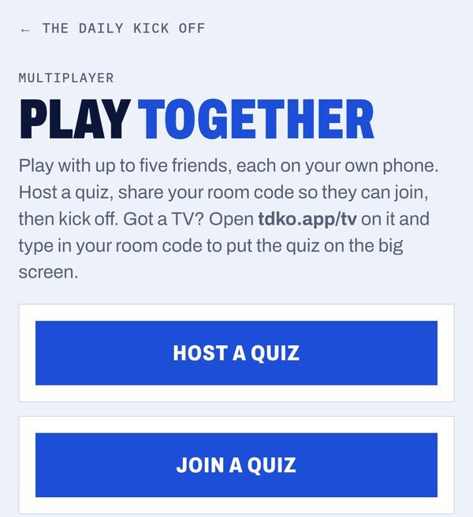
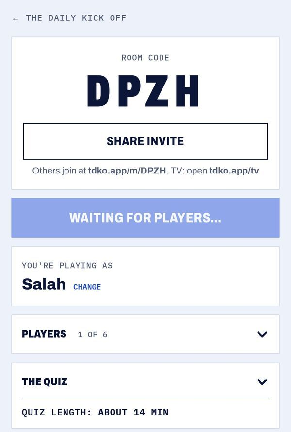
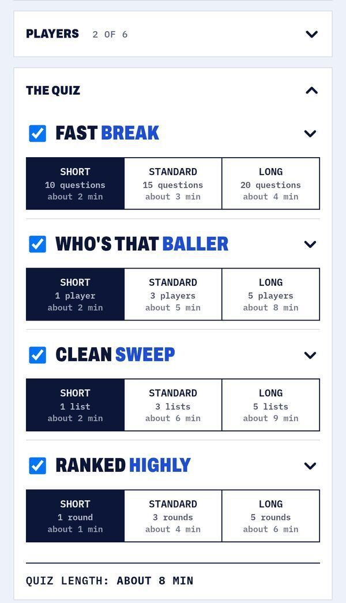

Scroll to the bottom of tdko.app and tap Training Ground. Enter your tester code and tap Unlock.


You're back on the home page, with Exit Training Ground at the top. Tap Multiplayer.

Tap Host a quiz. You get a four-letter room code.

Tap Share invite to send the link, or give out the code. Friends open the link, or go to Multiplayer, tap Join a quiz and type the code.
Tap Change to pick your own name. Got a TV? Open tdko.app/tv on it and enter the room code.

Open Players to choose how you play:
| Option | What happens |
|---|---|
| Everyone for themselves | Each player scores on their own |
| 2 teams or 3 teams | Players are split into teams. Tap Shuffle teams to mix them up |
Open The quiz. Tick the games you want, then pick a length for each. Tap the arrow by a game to see how it works.
| Game | Short | Standard | Long |
|---|---|---|---|
| Fast Break | 10 questions | 15 questions | 20 questions |
| Who's That Baller | 1 player | 3 players | 5 players |
| Clean Sweep | 1 list | 3 lists | 5 lists |
| Ranked Highly | 1 round | 3 rounds | 5 rounds |
Each option shows how long it takes, and the quiz length at the bottom adds them up.

Once someone has joined, Waiting for players… turns into Kick off. Tap it to start.
During a game you can Pause, Skip or End quiz. After each game, the Full time screen shows the scores and what's next. Tap Start when everyone's ready.
Something not working? Tell us through Contact us, with a screenshot if you can.
Go to Multiplayer